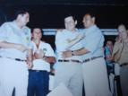
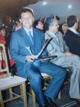

TRAJETÓRIA
Conheça a história do nosso Futuro Prefeito Itamar LeãoItamar Leão do Amaral, 48 anos, é torneiro mecânico de profissão, gestor público por formação e tornou-se administrador graças à sua vontade de melhorar a qualidade de vida de seu povo.
Desde cedo Itamar foi ensinado que a Educação é a base para o desenvolvimento humano, graças aos ensinamentos de sua mãe, dona Benedita, e seu pai, José Caboclo, que nunca mediram esforços para que seus filhos tivessem melhores oportunidades, fato que se consumou com a
obtenção de titulação nas mais diversas áreas do conhecimento tanto por si mesmo quanto por seus irmãos, Eliete, Eliana, Enilza e Arismar.
Casado e pai de dois filhos, Itamar pretende repassar aos filhos as mesmas lições que aprendeu, e sua atuação e vida comprovam que a lição foi válida. Itamar sempre priorizou a Educação, e acredita que este é o caminho do sucesso.
Durante anos acalentou o sonho de se tornar prefeito de sua cidade, Sanclerlândia, e viu seu ideal concretizado em 2000, tendo administrado o município durante 8 anos, trazendo o progresso e o desenvolvimento que sempre almejou tanto para sua cidade.
Sua primeira tentativa na vida pública ocorreu ainda em 1988, quando se candidatou a vice prefeito, não obtendo êxito, mas nem por isso esmorecendo frente à batalha. Em 1992, foi eleito vereador, e em 1994, foi eleito presidente da Câmara Municipal por seus pares. Em 1996 se reelegeu, e continuou sua luta pelo esporte e pelo bem estar social.
Em 1998, Itamar renunciou ao mandato de vereador e tornou-se Superintendente de Patrimônio da Secretaria de Esportes e Lazer do Estado de Goiás, ao lado de Marconi Perilo.
Em abril de 2000, voltou para Sanclerlândia para realizar o sonho de garoto, e pela primeira vez candidatou-se ao cargo majoritário do município. Itamar Leão foi eleito com 2.492 votos, e antes mesmo de iniciar sua gestão, procurou envolver toda a comunidade em sua administração.
Itamar conquistou a confiança do funcionalismo ao não demitir nenhum deles e empregar apenas poucos auxiliares. Sua gestão foi marcada pelo dinamismo e empreendedorismo,
palavra que foi incorporada à sua administração desde o início.
Graças à sua atuação, com a criação de um Plano de Governo bem elaborado e com dois Programas estratégicos, Itamar Leão conquistou, em 2001, a
Primeira Edição do Prêmio Mario Covas de Prefeito Empreendedor do SEBRAE. Itamar foi o grande vencedor do Prêmio na região Centro Oeste do País, tendo concorrido com mais 29 prefeituras inscritas em sua região.
Sobre o Prêmio Mário Covas, Itamar confessa que não podia mensurar a importância da conquista para a cidade. "Sanclerlândia se tornou uma referência nacional, e tivemos que trabalhar ainda mais para honrarmos o prêmio que além de levar o nome de Mário Covas ainda foi concedido por uma das instituições de maior credibilidade no Brasil, o Sebrae".
O Prêmio Mario Covas possibilitou a Itamar o reconhecimento de sua atuação como Gestor Público, pois através da divulgação do trabalho aqui desenvolvido, Itamar Leão obteve reconhecimento nacional e Internacional.
Seu dinamismo político o levou também à vice-presidência e posteriormente à Presidência da Associação Goiana dos Municípios (AGM), onde representou os municípios goianos e lutou pela causa municipalista.
Itamar Leão visitou vários países da Europa e Estados Unidos, sendo recebido por autoridades internacionais, com a finalidade de demonstrar que administrar com transparência, ousadia e dedicação são fatores imprescindíveis para a realização de uma boa gestão. Essas viagens proporcionaram o intercâmbio entre administradores das mais diversas partes do mundo, e renderam várias homenagens a Itamar.

{kind=link}
Itamar Leão é referência em sua cidade e região, e seu objetivo ao lançar seu nome para concorrer novamente a vaga para Prefeito Municipal de Sanclerlândia é buscar um novo rumo de desenvolvimento social e econômico para sua amada cidade de Sanclerlândia.
Itamar Leão, este é o meu Prefeito!